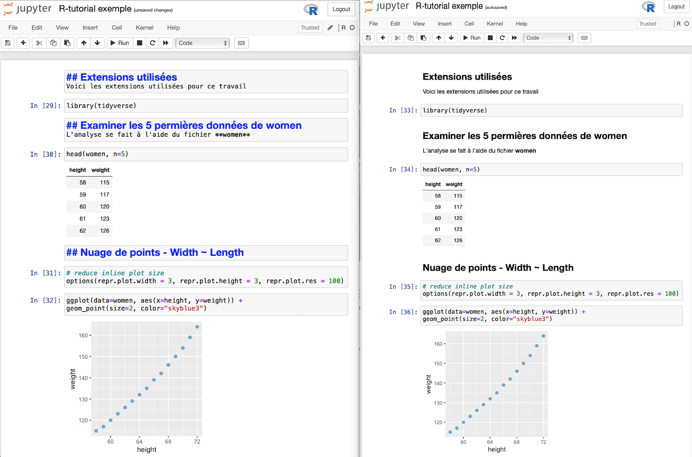
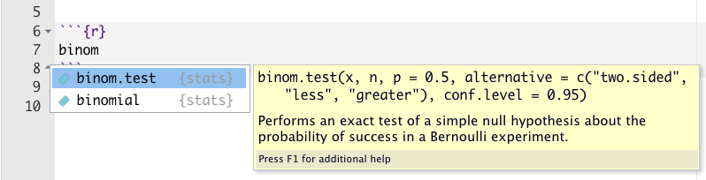
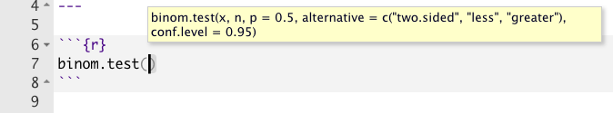
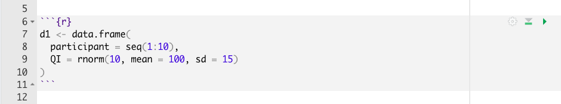
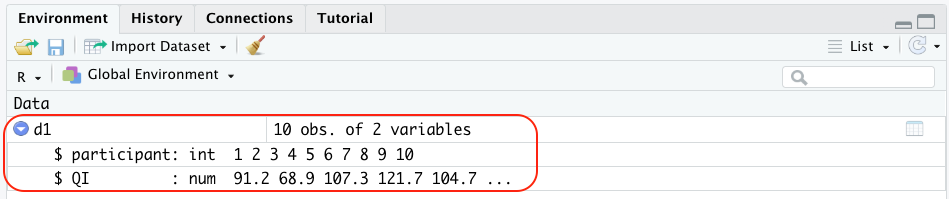
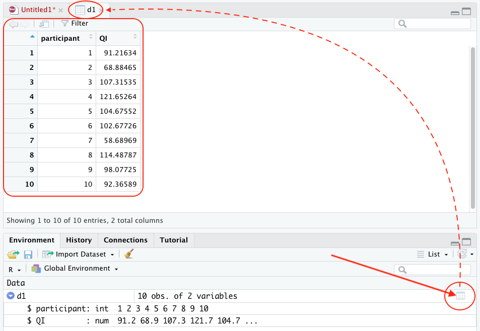

2 R et RStudio
Dans ce chapitre, vous trouverez un brève description des logiciels R et RStudio. À la toute fin de ce chapitre, vous trouverez aussi les liens pour les télécharger et les installer sur votre ordinateur1.
2.1 Intro à R
R a été développé par Robert Gentleman et Ross Ihaka du département de statistiques de l’Université de Auckland (Nouvelle-Zélande). Le nom R proviendrait de la première lettre du prénom de ces deux auteurs 2. Depuis le milieu des années 1997, R est la responsabilité d’un groupe de travail intitulé The R Project (Douglass et al. 2022; Wickham et Grolemund 2017). La liste des membres de ce groupe est disponible en cliquant ici.
R n’est pas simplement un logiciel de statistiques mais bien une suite intégrée de fonctionnalités logicielles. R est un environnement de travail pour la manipulation de données, le calcul de données et la représentation graphique de données. Entre autres, R :
- permet de manipuler, d’enregistrer et de présenter des données
- comprend de nombreux opérateurs arithmétiques, logiques et de comparaison
- comprend une multitude d’outils pour l’analyse statistique de données
- comprend une capacité graphique exhaustive
- comprend un langage de programmation
2.1.1 Avantages
En plus de sa gratuité (telle que discutée dans la préface), R possède de nombreux avantages.
- R permet de produire, à partir d’un même système, des analyses statistiques très simples mais aussi des analyses extrêmement complexes.
- Les nouvelles approches statistiques développées par les statisticiens sont rapidement implantées par les développeurs de la communauté R. Il n’est pas nécessaire d’attendre des années avant qu’une compagnie intègre cette nouvelle approche dans son logiciel.
- R possède un langage très flexible et il peut être adapté au besoin de l’utilisateur.
- R est de nature open source. Donc, les codes des différentes fonctions statistiques sont disponibles à tous, ce qui permet de vérifier l’exactitude de l’approche utilisée et de les reproduire.
- L’apprentissage de R facilite grandement l’apprentissage de d’autres logiciels statistiques, comme STATA ou SPSS. L’inverse, cependant, n’est pas vrai.
- L’apprentissage de R favorise aussi l’apprentissage de d’autres langages informatiques, comme Python.
- Fogarty (2018) argumente même que la connaissance de R est un atout incomparable lors de la sélection des candidats qui appliquent aux études gradués. Selon lui, les opportunités d’emploi sont plus grandes pour les candidats ayant des connaissances avec R que pour les autres candidats.
2.1.2 Désavantages
Malgré ses avantages, R possèdent quelques inconvénients qui doivent être soulignés :
- Contrairement à STATA, SPSS ou SAS, R n’offre pas de support d’aide centralisé. Heureusement, la communauté R est planétaire et il est relativement facile de trouver réponse à nos questions à l’aide du moteur de recherche de Google.
- La courbe d’apprentissage de R est relativement abrupte et les premiers pas avec R peuvent être décourageants.
- Il y a un manque de consistance dans l’implantation des différentes fonctions statistiques et dans la présentation des fonctions d’aide. Certaines extensions sont très bien expliquées à l’aide de vignettes alors que d’autres sont présentées de façon très rudimentaire.
- Les mêmes fonctions statistiques peuvent apparaître dans différentes extensions, dédoublant ou triplant même la même fonctionnalité.
- Différentes fonctions statistiques associées à des extensions différentes possèdent le même nom mais elles n’ont pas la même utilité. Heureusement, il existe des solutions relativement simples pour préciser la fonction que nous désirons utiliser.
2.2 Intro à RStudio
RStudio a été développé par une compagnie privée du nom de Posit. RStudio est une interface logicielle entre R et l’utilisateur. Dans sa version de base, telle que démontrée précédemment, R présente une interface relativement sévère qui est difficile à utiliser. RStudio a été développé dans le but d’améliorer le plaisir de l’utilisateur qui interagit avec R.
Tel que présenté précédemment précédamment, RStudio comprend plusieurs fenêtres qui permettent à l’analyste de rédiger les codes R, tout en examinant les données et les résultats. De plus, RStudio facilite l’exportation des résultats en plusieurs formats (.docx, .pdf, .html).
Notez que RStudio ne se limite pas à être l’interface avec R puisque de nombreux autres langages de programmation y ont été intégrés (ex : Python, STAN, C++). Nous allons utiliser la version gratuite de RStudio, soit RStudio IDE. IDE signifie Integrated Development Environment. RStudio IDE fonctionne avec plusieurs systèmes d’exploitation, dont Windows, MacOS et Linux.
Afin de faciliter l’interaction avec R, certaines alternatives à RStudio existent. À titre d’exemples, je souligne Jupyter notebook, Jupyter lab, Architect, ou R AnalyticFlow. Malgré tout, RStudio demeure le standard de qualité quand vient le temps d’interagir avec R. Personnellement, si RStudio n’existait pas, j’opterais pour Jupyter notebook via son intégration avec la plateforme Anaconda Navigator, principalement en raison de sa simplicité d’utilisation et de son intégration avec le langage Markdown. La Figure 2.1 présente un exemple de codes R à partir de l’application Jupiter notebook (à gauche) et son rendu en format .html (à droite).
2.2.1 Avantages
Dans le but de faciliter l’interaction avec l’utilisateur, RStudio présente quelques avantages très notables. Bien que ma démarche de présentation peut sembler un peu précoce pour celles et ceux d’entre vous qui ne connaissez pas encore RStudio, j’en profite immédiatement pour présenter deux de ses avantages.
2.2.1.1 Syntaxe intégrée
RStudio facilite la rédaction des scripts R en proposant de compléter votre syntaxe. Ainsi, dès que vous débutez à écrire le nom d’une fonction, RStudio propose (1) le nom de quelques fonctions qui débute par les mêmes lettres et (2) la syntaxe à suivre pour compléter l’écriture de la fonction. Par exemple, imaginons que nous désirons effectuer un test binomial. Le nom de la fonction à utiliser est binom.test(). Dans un bloc de codes R, dès que j’inscris binom, RStudio me propose deux choix possibles de fonctions qui débutent par binom (voir Figure 2.2). Il me suffit de sélectionner celle que je désire utiliser pour qu’elle se complète automatiquement dans mon bloc de codes R. Par la suite, RStudio propose à nouveau la syntaxe à utiliser pour compléter l’écriture de la fonction sélectionnée (voir Figure 2.3).


2.2.1.2 Examiner les objets R
La fenêtre Environment vous permet de voir rapidement tous les objets R que vous avez créés lors de votre session de travail et de les examiner via une fenêtre qui ressemble à un chiffrier électronique (comme Excel ou Numbers). Prenons l’exemple du bloc de codes R de la Figure 2.4 dans lequel j’ai créé un ensemble de données nommé d1 qui contient le quotient intellectuel (QI) de 10 participants fictifs :

Je peux examiner le contenu de cet objet d1 à partir de la fenêtre Environment de RStudio en cliquant sur le triangle blanc placée dans un cercle bleu à la gauche l’objet d1 (voir Figure 2.5).

Je peux aussi examiner l’ensemble du contenu de l’objet d1 en cliquant sur le symbole du chiffrier situé à l’extrême droite de l’objet d1 dans le fenêtre Environment (voir Figure 2.6) :

2.2.2 RStudio - vidéo d’introduction
Le nombre d’options offertes par RStudio est particulièrement vaste et seule une bonne séance de travail avec RStudio nous permettrait d’en faire le tour. Néanmoins, ci-dessous, j’ai ajouté un lien pour une vidéo (10 min. 13 sec.) qui montre les principales caractéristiques de RStudio. Pour toute personne qui débute avec RStudio, le visionnement de cette vidéo est fortement recommandé. Personnellement, j’aurais bien aimé avoir accès à ce type de documentation lorsque j’ai débuté à utiliser RStudio !
2.3 Installer R & RStudio
Si vous avez déjà installé R et RStudio, vous pouvez sauter cette section.
2.3.1 Vidéo d’installation
Si vous n’avez pas encore installé R et RStudio, voici une vidéo (7 min. 38 sec.) dans laquelle je montre comment installer les logiciels R et RStudio à partir du site web de téléchargement de la compagnie Posit. La démonstration est faite à la fois pour le système d’exploitation Windows et pour le système d’exploitation macOS. Pour macOS, j’explique aussi comment identifier si votre ordinateur possède un processeur Apple silicon ou un processeur Intel, ce qui est important pour télécharger la bonne version de R. La Section 2.3.2 présente les liens web pour installer R et RStudio.
2.3.2 Liens web
Voici les liens pour télécharger une version récente (et gratuite) de R et de RStudio. Assurez-vous de télécharger les versions adaptées à votre système d’exploitation (OS, Windows, Linux) :
XQuartz. Pour les utilisateurs d’ordinateur Mac, l’installation du logiciel XQuartz est aussi nécessaire pour la version 10.9 de OS X et les versions les plus récentes de OS X.
2.3.3 Installation
Une fois les fichiers .exe (PC) ou .dmg (Mac) téléchargés dans votre dossier de Téléchargement, cliquez sur les fichiers pour installer les applications et ensuite, suivez les étapes d’installation. Débutez par installer R avant d’installer RStudio.
2.4 Problèmes et solutions
Dans l’éventualité où, peu importe la raison, vous ne réussissez pas à installer une version pleinement fonctionnelle de R et/ou de RStudio sur votre ordinateur, je vous encourage à utiliser Posit Cloud (voir Chapitre 7). Cette version de RStudio vous permet d’utiliser R et RStudio directement dans votre navigateur web.
L’interface web Posit Cloud permet d’utiliser gratuitement les logiciels R et RStudio sans qu’il ne soit nécessaire de télécharger R et RStudio sur votre ordinateur. Mais prenez note qu’il y a un maximum d’heures gratuites d’utilisation et votre compte devient bloquer jusqu’au mois suivant. La seule solution consiste à payer un certain montant d’argent par mois ($).↩︎
Prenez note que R est un langage de programmation qui s’apparente au langage S, lequel a été développé par Rick Becker, John Chambers et Allan Wilks de la compagnie AT&T Bell Laboratories.↩︎